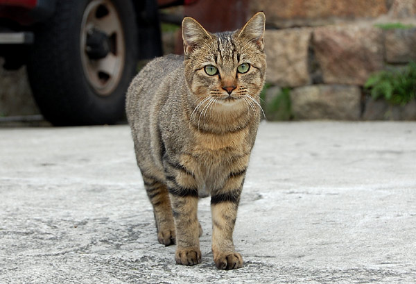
猫の多い直島本村地区。 この猫はまだ幼いのかな。顔もあどけないけど、ちょっと呼んだら「なになになに～？何かくれるの？」って感じで近寄ってきた…と思ったら「あ！知らないひとに近寄っちゃいけないんだっけ」って感じで、きびすを返して逃げてった。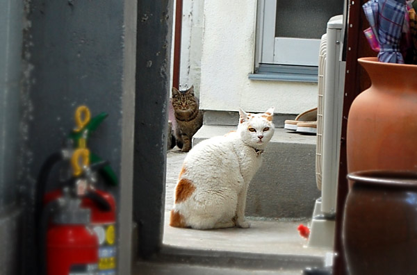
あれ？みいちゃん？※直島のアイドル猫 4年ぶりに会ったけど、すごい貫禄ついてるよー。相変わらず触らしてくれる反面、猫パンチのおつりをくれるみたい。後ろのキジ猫に因縁つけてた。…ボス猫なの？みいちゃん…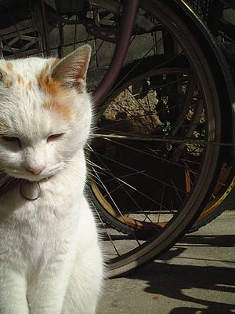
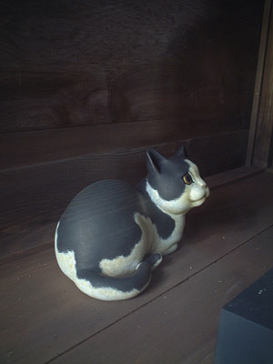
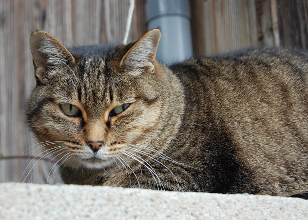
塀の上でめんどくさそうに写真のモデルになってくれたキジ猫。 港町には猫が似合う。 どの猫も人なつこいわけではなく、微妙に距離感を持って人間に接してくる。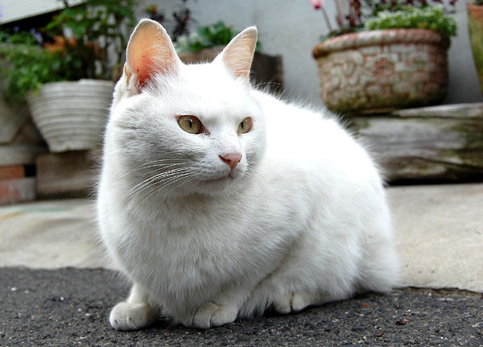
道路端にいた白猫ちゃん。 後ろ足片方が無かった。交通事故かな？ここら辺は細い道なのに時間や曜日によって交通量が多いからこういう悲しいことも起こってしまうのかもしれない。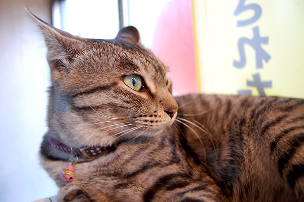
たこやき「ふうちゃん」とこのネコ。 ぜんぜんカメラを見てくれない…というかレンズを向けると「ぷい」 愛想は無いけど、可愛い看板ネコ。 「はいしゃ」近くでみつけた一番ひとなつこかったネコ。 トコトコトコ…ゴローン。にゃーん！「写真？撮っていいヨ」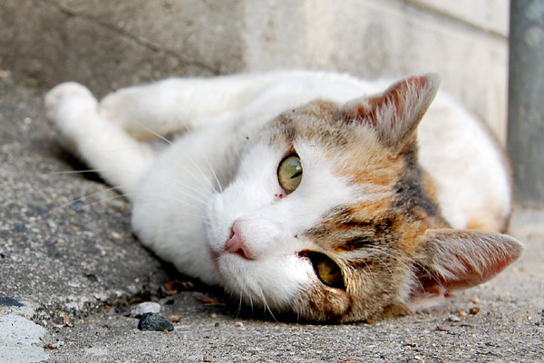
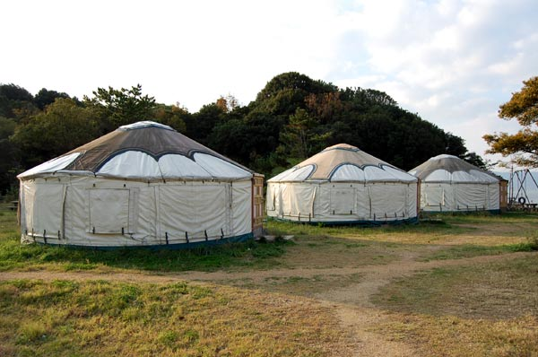
つつじ荘のパオ。 全部で10棟。裏手は山、正面は海とゆー好立地。 以前にシーサイドパークにパオがあったとき、「靴は中に！狸が持っていってしまいます！」という注意があったのだけど、ここも同様。 しかも、パオの入り口にう○こが山盛り状態で、「なんでここにこんなう○こがっ！」と思ったのだけどあれはいわゆる「狸のためふん」。 こんもりと貯まってて知らない人が見たらぎょっとするかもね。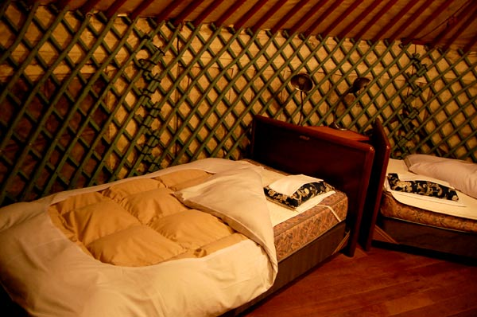
パオの中は20畳ぐらいかな？ベッドは4つ（シモンズベッド）。海のそばのせいなのかちょっとかびくさいけど、慣れればOK。ちょっと肌寒くてもストーブの勢いがスゴイのであっという間に「アチー！」ってなる。 21～23度設定で充分。 旅で出た洗濯物も、外の洗い場であらって（お湯は出ないけど）ストーブのそばに干して置けばあっというまに乾いちゃう。あまりにもの乾きっぷりに感動してありとあらゆるものを洗濯してしまった。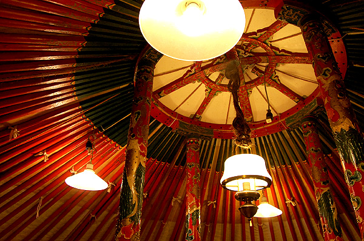
前のパオはランプが一つだったような…ちょっと明るくなりました。 それにしてもパオに泊まれるってなかなかないよね。楽しい。 トイレが無いから、夜中に行きたいときはごそごそと靴を履いてコートを着て50mぐらい先おｎトイレにいかなくては行けないのがちょっと辛いけど。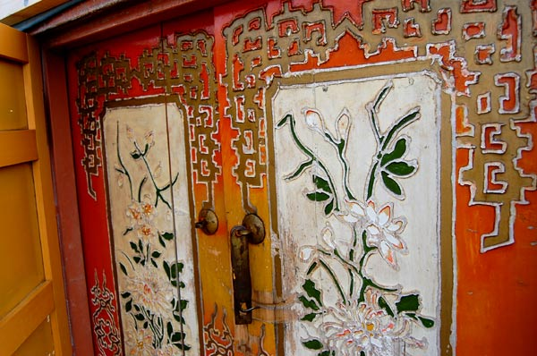
パオの入り口。 かわいい。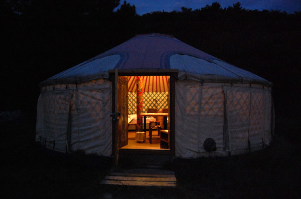
夜のパオ。うっすらとあかりが透けて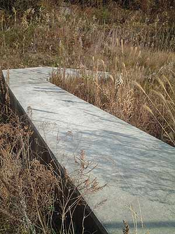
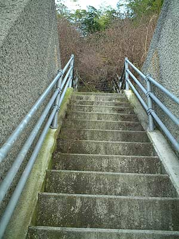
直島を語る上で重要なキーワードが「サイトスペシフィック」なのだけれども、ではその直島という土地のチカラとはなんぞやと。ではとことこ歩いてその答え探しをしようかと、まずは宮浦港から役場経由、地中美術館方面へ。 リュックにはお弁当と水筒。海岸でお昼にするのです。 しずかなひとり遠足。かつんかつんとリュックの中で水筒が遊んでいる音がリズムを刻んで、もくもくと歩く。 細い道、小さな階段、札所への案内板、朽ちた看板。 幼いころに行ったおばあちゃんの田舎みたいだなぁ～懐かしいな～。とゆー感じなのだけど私には田舎が無いのでした。でも、懐かしさの舞台美術がそこここにセットされているような。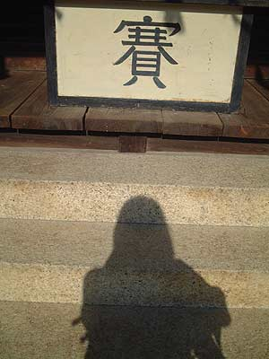
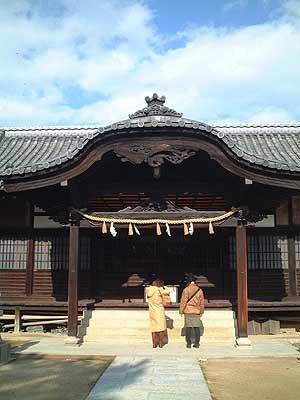
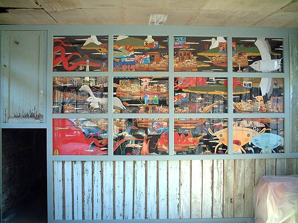
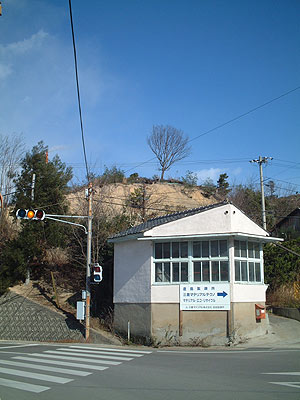
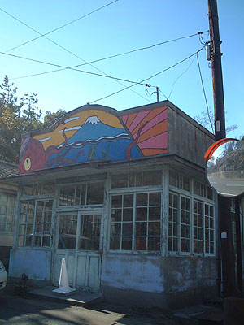
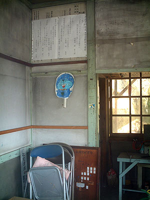
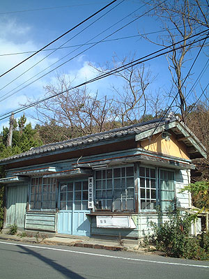
てこてこと港を目指して歩く。古い建物がところどころに。朽ちているのに活き活きと主張する建物。 その建物の影から幼い頃の私が飛び出してくるような。 遊び場だった古い営団住宅の一角を思い出す。 草ぼうぼう、風雨を幾度も耐え忍んだ屋根瓦、カタカタと風に応えるガラス窓。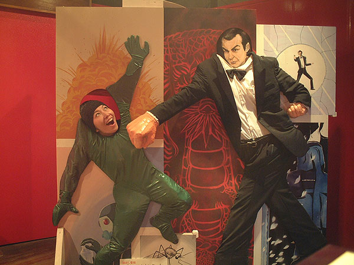
宮浦港手前にあるのが「007記念館」。 直島、ベネッセハウスが舞台となる「007赤い刺青の男」。その映画化実現への祈りを込めた記念館。 でですね、もし乗船するまで時間があるなら、ここのテレビを見るべし。 えー…とある意味感動。そして見終わったあとに「007赤い刺青の男」を読みたくなること請け合い。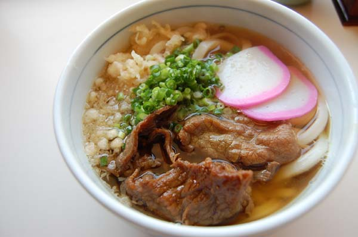
直島グルメ☆☆☆の山本うどん。 ラーメン食べる気まんまんで行ったのだけど、「今はラーメンやってないのヨー」と言われてしまう… あああああ！前回食べておけば良かった！また復活するかな？ラーメン。 にしても肉うどんは相変わらず美味しい。 ぷりっとムチムチのうどんに、ちょっと甘めのつゆと肉。 私の人生No.1肉うどん。 フツーによそって渡されたうどんなのに、この色彩のバランス！おばちゃんはフードコーディネーターですかっ！ さてさてと、割り箸割って、ちょこっと七味をかけて…至福タイム。 ハフハフずずずっと。嬉しい味でいっぱい。もう美味しくてつゆを飲み干してしまう。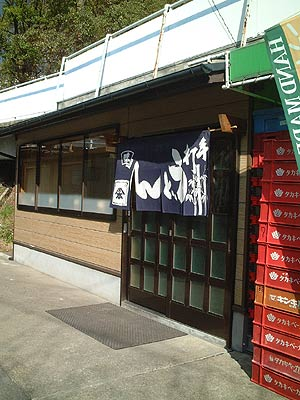
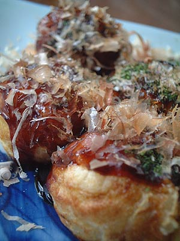
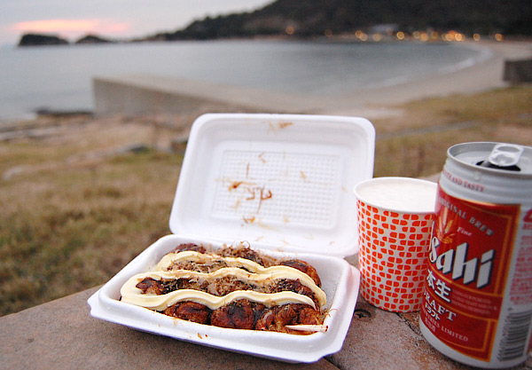
そしてまたこれも☆☆☆のたこ焼き「ふうちゃん」。 今回は「Ｉラブ湯」でひとっ風呂浴びた後に、テイクアウトを注文してつつじ荘で食べることに。 セルフのマヨをたっぷりかけて、あつあつのたこ焼き片手につつじ荘行きのバスに飛び乗る。 小さなバス車内ほかほかのイイにおい！同乗していた外国人の男性が「オコノミヤキ…」とぽつり。この香り、たまらんヨネ！ つつじ荘入って自販機で発泡酒買って、片手にあつあつ、片手にひえひえを持って海岸のベンチに。 うんうんうん！とろっとカチットしたたこ焼き！んま！ セルフでマヨだくにしちゃったけど、半分マヨにすればよかったかなー！ちょっと冷えてきた夕暮れの海岸に、あつあつのたこ焼きはウキウキする夜の前菜。 その先に見えるレストランのゴハンは優雅みたいだけど、ぜんぜん負けてないこの満足度。 ひとりでぺろっとたべちゃう。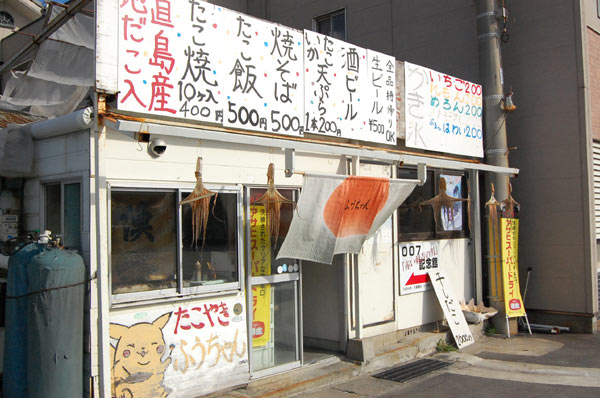
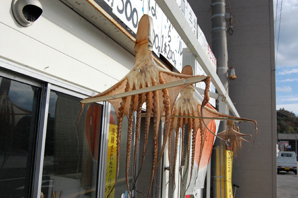
おなじみタコ暖簾が直島の玄関先にぶらさがっているのです。